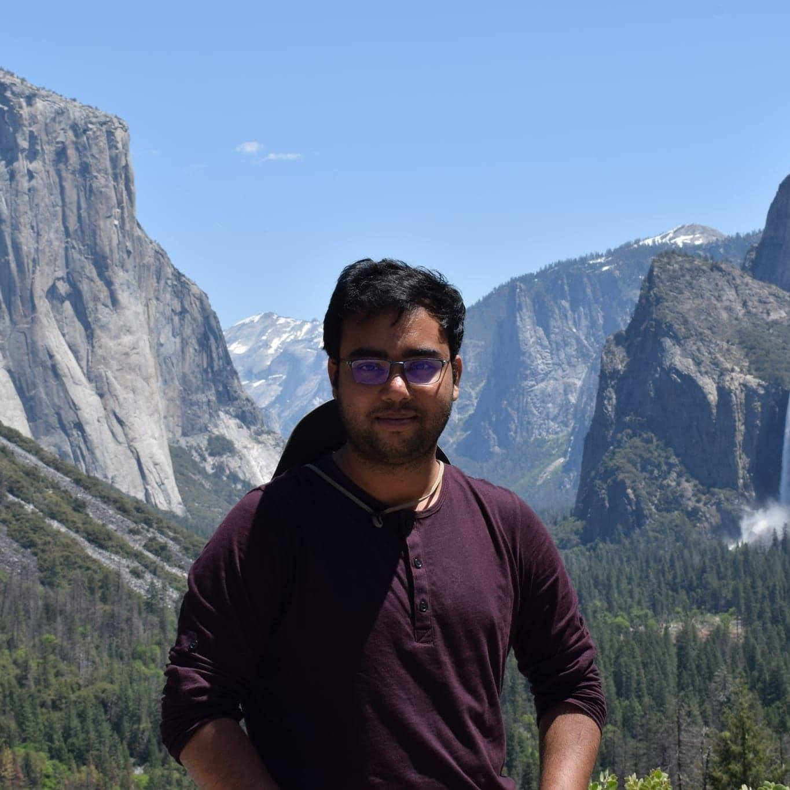
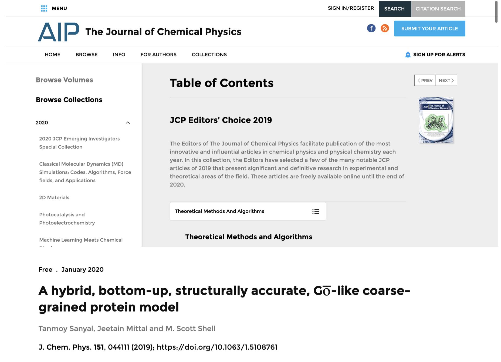
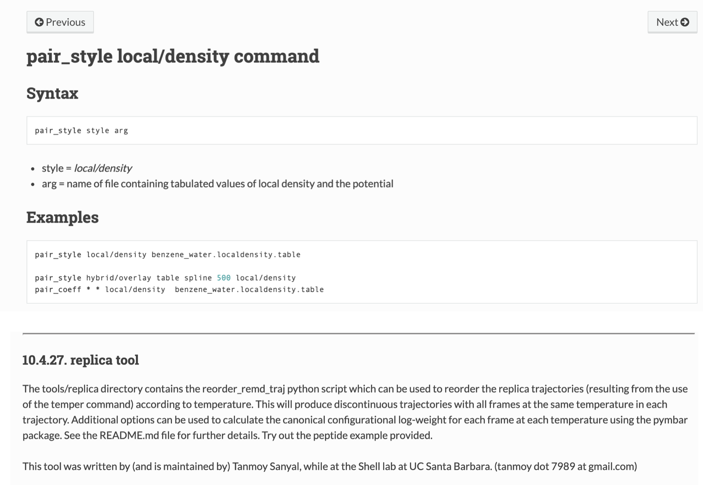
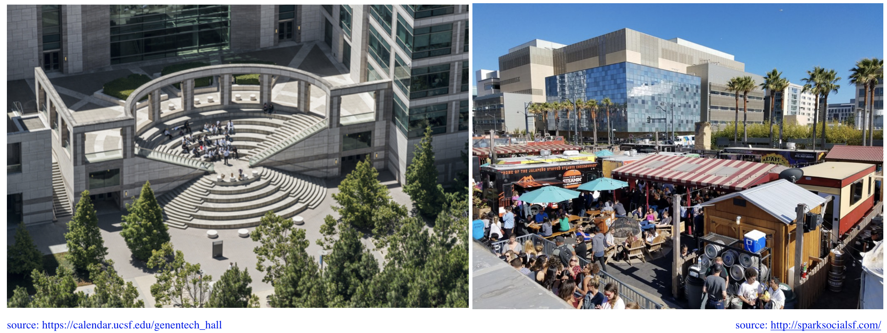
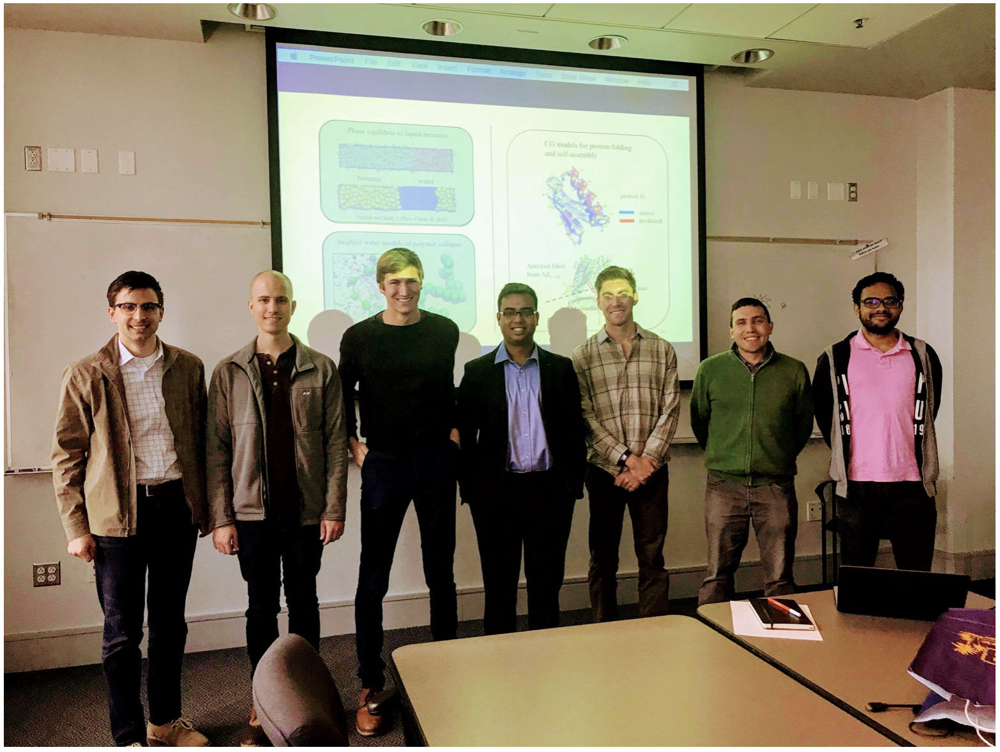

Tanmoy Sanyal
Hi and welcome to my website!
I am a postdoctoral scholar working with Prof. Andrej Sali at UCSF. I do integrative structure determination of large protein complexes, and also evelop computational toolchains for coupling different models of cellular structure and function, as part of the Pancreatic Beta Cell Consortium (PBCC) – a large cross-functional team of experimentalists and modelers across the US west (UCSF, USC, UCLA, Scripps, Salk) and the east (Rutgers) coasts, Montreal (Universite de Montreal) and Sanghai (iHuman Institute at SanghaiTech), committed to developing models of the entire pancreatic beta cell in eukaryotes.
I completed my PhD in Chemical Engineering with a minor in Computational Science and Engineering from UCSB in 2018, supervised by Prof. M. Scott Shell. In my thesis, I developed novel coarse-grained models of liquid mixtures, polymers and protein folding for efficient (~30-100 times faster than detailed atomistic representation) molecular dynamics (MD) simulations, while retaining thermodynamic accuracy.
Please feel free to reach out, if you have questions or comments about my research or want to collaborate.
news
2019 editor’s choice article in the Journal of Chemical Physics (Feb 2020): Coarse grained protein model paper selected as one of 88 “most innovative and influential articles” of 2019 by the Journal of Chemical Physics. The article is free to download through the end of 2020.

LAMMPS open-source contributions (Sep 2019)**: New manybody potential and post-processing tool for replica exchange MD simulations, now added to LAMMPS-Sep2019 stable release.

Joined a postdoc position in the Sali lab at UCSF: Integrative structural modeling of eukaryotic DNA replisomal machinery and whole cell modeling of pancreatic beta cells.Oh and also, awesome food trucks around the UCSF Mission-bay campus.

Ph(inally) D(one)! (Dec. 2018): Thesis defense done! Graduated from UCSB!! (thesis)

Research
Postdoc work
(put image here)
Write abstract here
Local density
(put image here)
Write abstract here
paper-1**
paper-2
paper-3
LAMMPS information
CG models of protein structure
(put image here)
Write abstract here
paper
Multiscale spatio-temporal respiration modeling
(put image here)
paper-1
paper-2
Publications
Link to my Google Scholar profile.
A hybrid, bottom-up, structurally accurate, Go-like coarse-grained protein model  , SI
, SI
Tanmoy Sanyal, Jeetain Mittal and M. Scott Shell
Journal of Chemical Physics, 2019, 151, 044111
(2019 editor’s pick article, July 2019 featured article)
Transferability of local density-assisted implicit solvation models for homogeneous fluid mixtures
David Rosenberger, Tanmoy Sanyal, M. Scott Shell and Nico F.A. van der Vegt
Journal of Chemical Theory and Computation, 2019, 15 (5), 2881-2895
Evaporation-induced assembly of colloidal crystals , SI
Michael P. Howard, Wesley F. Reinhart, Tanmoy Sanyal, M. Scott Shell
Arash Nikoubashman and Athanassios Z. Panagiotopoulos, Journal of Chemical Physics, 2018, 149, 209902
(2018 editor’s pick article)
Transferable coarse-grained models of liquid-liquid equilibrium using local density potentials optimized with the relative entropy , SI
Tanmoy Sanyal and M. Scott Shell
Journal of Physical Chemistry B, 2018, 122 (21), 5678-5693
Coarse-grained models using local-density potentials optimized with the relative entropy: Application to implicit solvation , SI
Tanmoy Sanyal and M. Scott Shell
Journal of Chemical Physics, 2016, 145, 034109
Multiscale analysis of simultaneous uptake of two reactive gases in the human lungs and its application to methemoglobin anemia
Tanmoy Sanyal and Saikat Chakraborty
Computers & Chemical Engineering, 2013, 59 (5), 226-242
Multiscale analysis of hypoxemia in methemoglobin anemia
Tanmoy Sanyal and Saikat Chakraborty
Mathematical Biosciences, 2013, 241 (2), 167-180
Resume
Click here for a PDF copy of my resume
Appointments:
Jan. 2019-present: Postdoctoral scholar, University of California San Francisco (UCSF), San Francisco, CA
Advisor: Andrej Sali
Education:
2013-2018: PhD, Chemical Engineering, University of California Santa Barbara (UCSB), Santa Barbara, CA
Advisor: M. Scott Shell
2008-2013: B.Tech (Hons.) + M.Tech integrated dual degree, Chemical Engineering, Indian Institute of Technology Kharagpur (IIT-KGP), Kharagpur, WB, India
Undergraduate and masters thesis advisor: Saikat Chakraborty
Contact
Primary email: tanmoy [dot] 7989 [at] gmail [dot] com
School email: tanmoy [dot] sanyal [at] ucsf [dot] edu
Twitter : @dotslashadotout
Linkedin: tanmoy-sanyal
Github: tanmoy7989